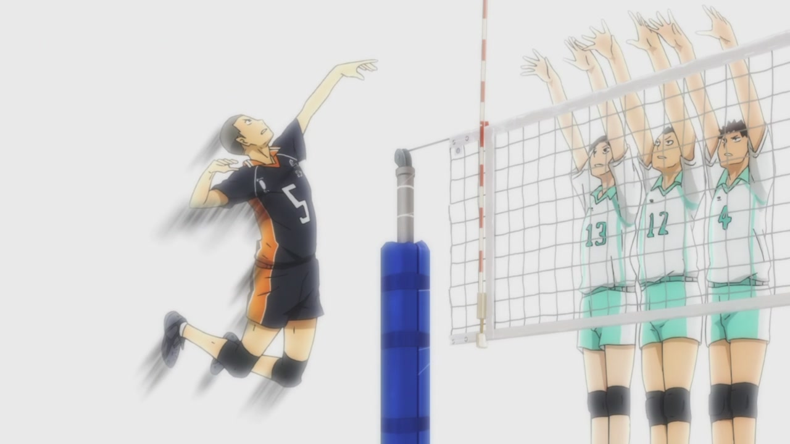
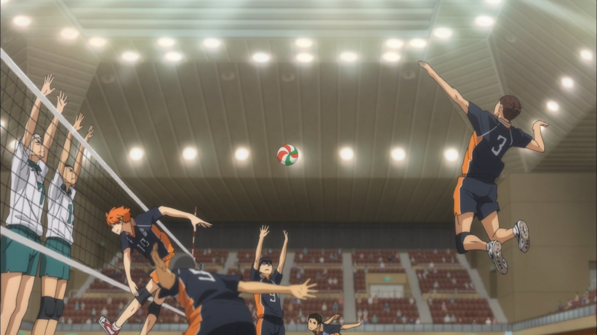
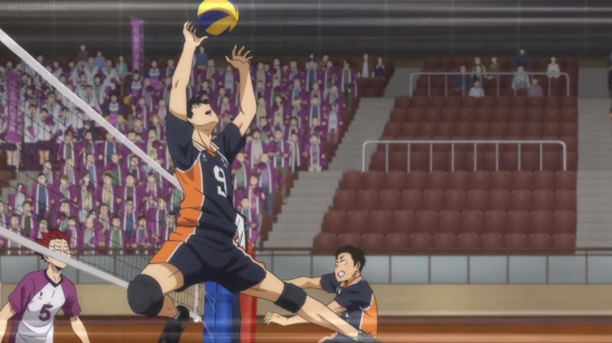
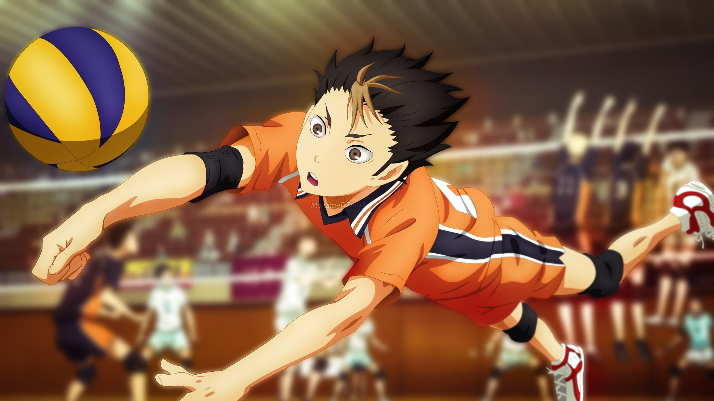

Какие существуют игроки в волейболе?
- Доигровщики (нападающие второго темпа) – игроки, атакующие с края сетки.
>
- Диагональные – самые высокие и прыгучие игроки команды, как правило, атакуют с задней линии.
>
- Центральные блокирующие(нападающие первого темпа) – высокие игроки, блокирующие атаки соперника, атакуют из третьей зоны.
 >
>
- Связующий – игрок, определяющий варианты атаки.
>
- Либеро – основной принимающий, рост обычно меньше 190 сантиметров.
>
Назад